Trustworthy AI
Drift Learning / Robust Generalization / Safety
I am a Postdoctoral Research Fellow at the Australian Artificial Intelligence Institute (AAII), University of Technology Sydney (UTS), working with Distinguished Prof. Jie Lu in the DeSI Lab. I received my Ph.D. in Computer Science from UTS in 2024 under the supervision of Prof. Jie Lu. In 2019, I was a visiting researcher at the School of Computer Science, Carnegie Mellon University (CMU), USA, working with Prof. Alexander G. Hauptmann and Prof. Xiaojun Chang. My research centers on Trustworthy Autonomous Intelligence in complex environments, encompassing foundational algorithms for trustworthy AI, multimodal learning, and intelligent agents. I aim to advance the theoretical foundations and methods that enable AI systems to learn, reason, and act reliably in open, dynamic environments.
Drift Learning / Robust Generalization / Safety
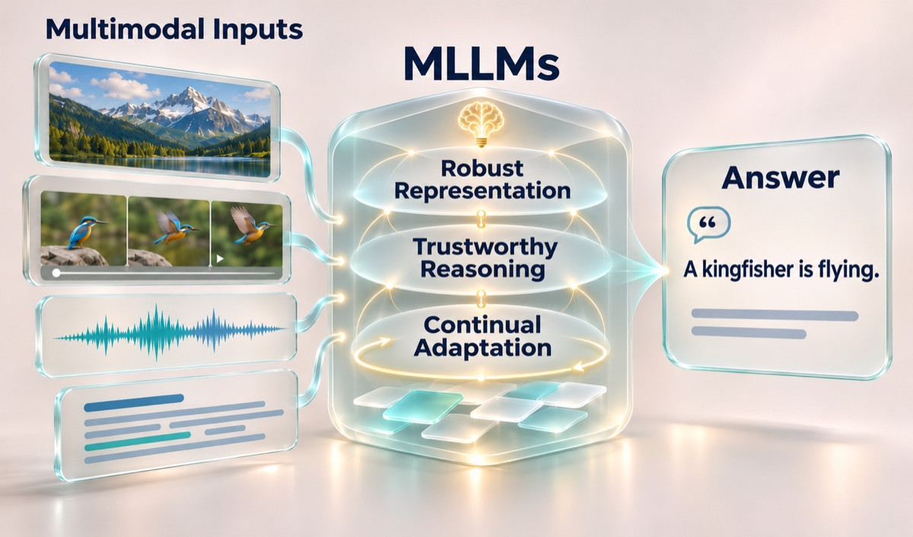
Robust Representation / Trustworthy Reasoning / Continual Adaptation
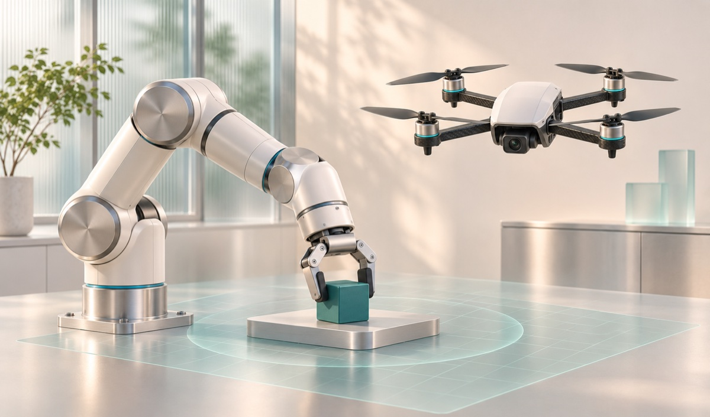
Multiagent RL / VLA / UAV-VLN
† Equal contribution. * Corresponding author.
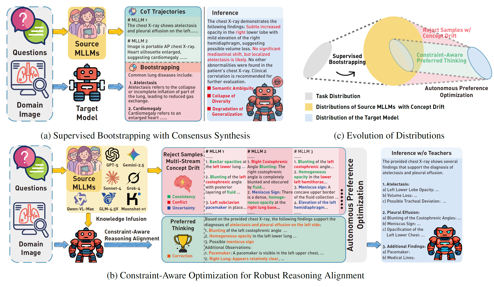
ICML ’26Xiaoyu Yang, En Yu, Wei Duan, Jie Lu
ICML 2026
Changhua Xu, En Yu, Junyu Xuan, Jie Lu
IJCAI 2026
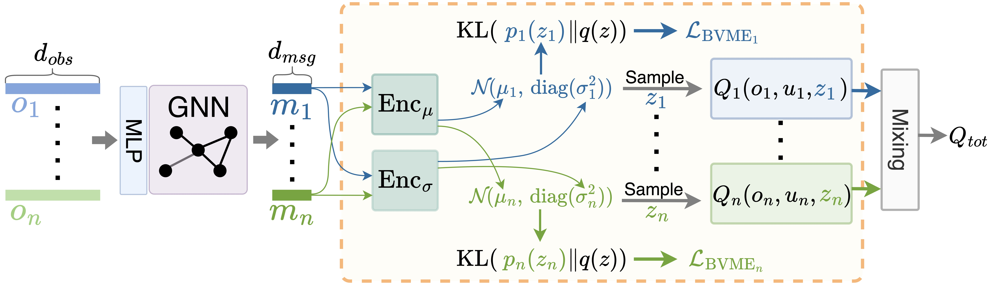
AAMAS ’26Wei Duan, Jie Lu, En Yu, Junyu Xuan
AAMAS 2026 Oral Presentation
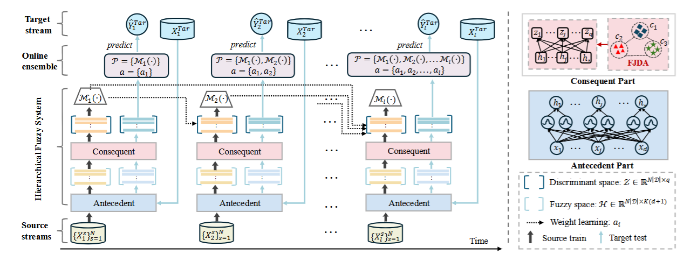
IEEE TFS ’26En Yu, Jie Lu, Xiaoyu Yang, Guangquan Zhang
IEEE Transactions on Fuzzy Systems 2026
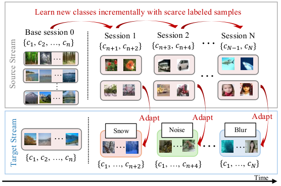
WWW ’26En Yu, Jie Lu, Guangquan Zhang
The ACM Web Conference (WWW) 2026
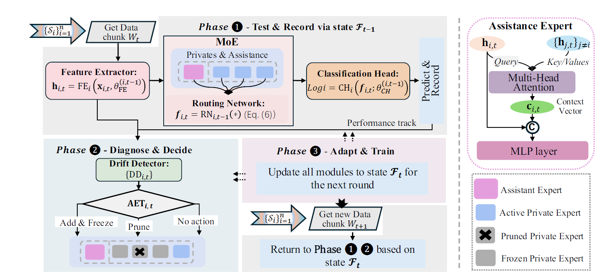
AAAI ’26En Yu, Jie Lu, Kun Wang, Xiaoyu Yang, Guangquan Zhang
AAAI 2026 Oral Presentation
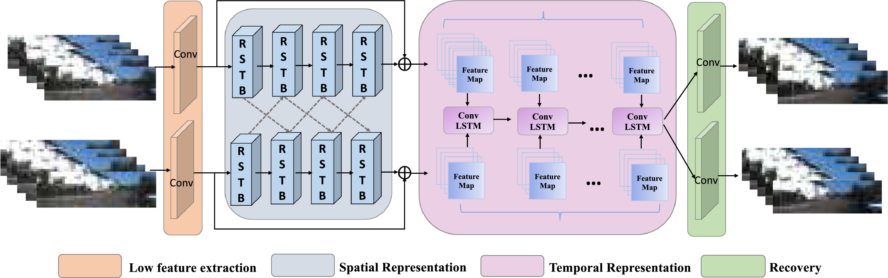
PR ’26En Yu, Jie Lu, Kaihao Zhang, Guangquan Zhang
Pattern Recognition 2026
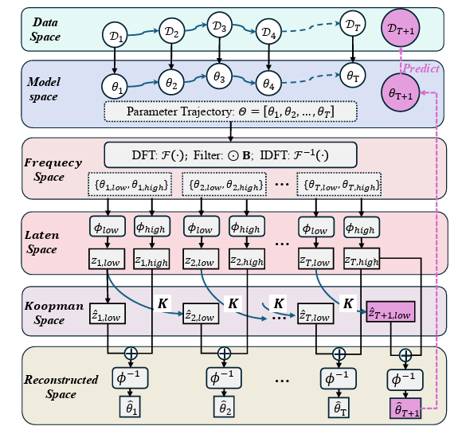
NeurIPS ’25En Yu, Jie Lu, Xiaoyu Yang, Guangquan Zhang, Zhen Fang
NeurIPS 2025
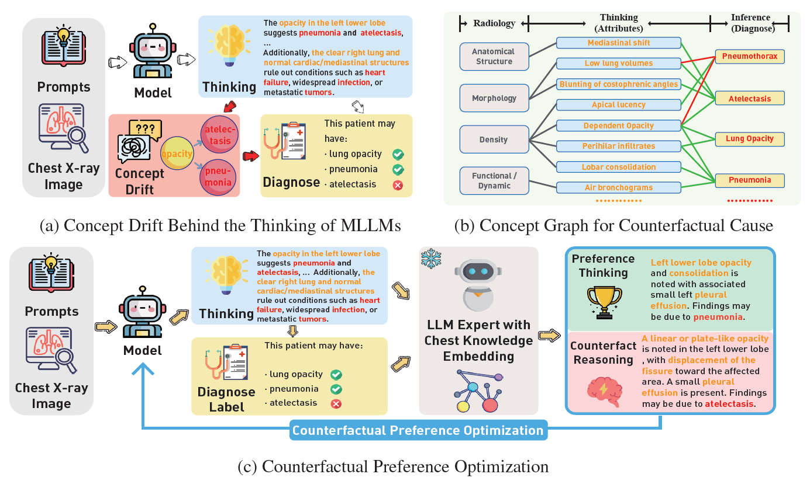
NeurIPS ’25Xiaoyu Yang, Jie Lu, En Yu*
NeurIPS 2025
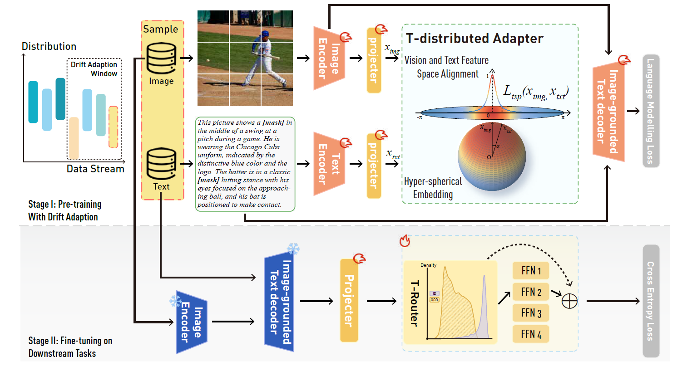
ICLR ’25Xiaoyu Yang, Jie Lu, En Yu*
ICLR 2025
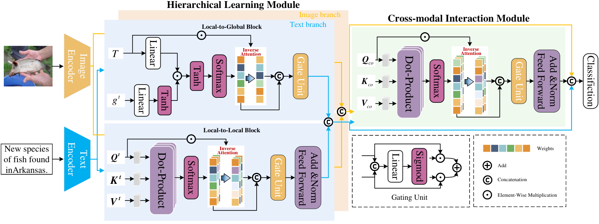
IJCAI ’25Tianlin Zhang, En Yu†, Yi Shao, Jiande Sun
IJCAI 2025
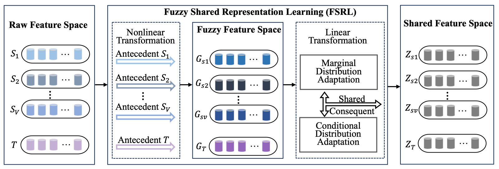
IEEE TFS ’24En Yu, Jie Lu, Guangquan Zhang
IEEE Transactions on Fuzzy Systems 2024
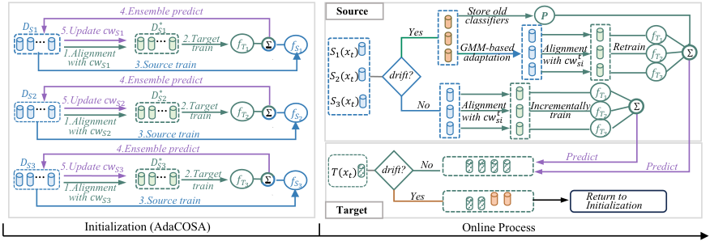
AAAI ’24En Yu, Jie Lu, Bin Zhang, Guangquan Zhang
AAAI 2024
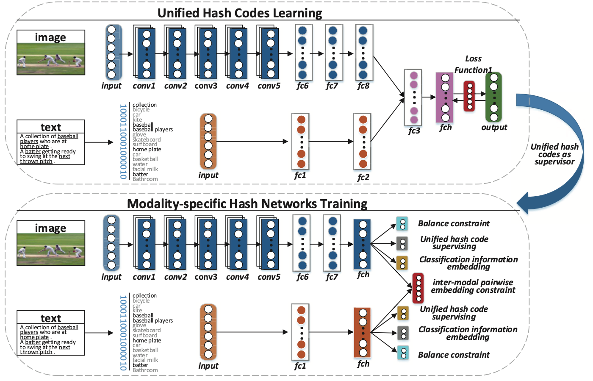
ICME ’19L. Wang, L. Zhu, E. Yu, J. Sun, H. Zhang
ICME 2019 Oral Presentation
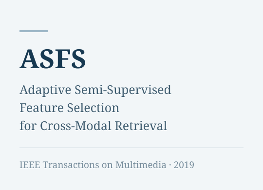
IEEE TMM ’19E. Yu, J. Sun, J. Li, X. Chang, X.-H. Han, A. G. Hauptmann
IEEE Transactions on Multimedia 2019